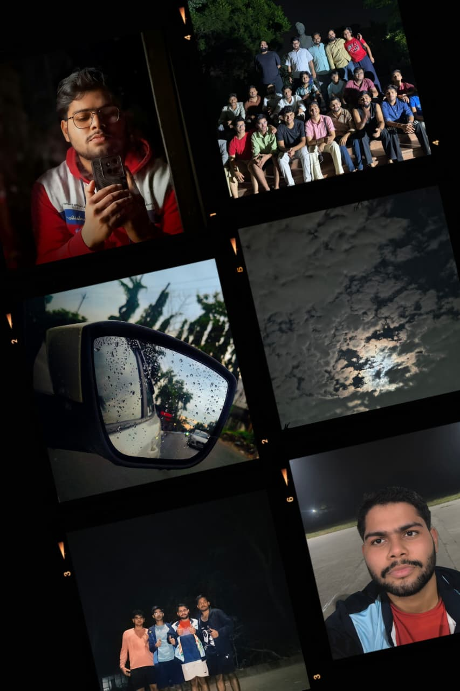
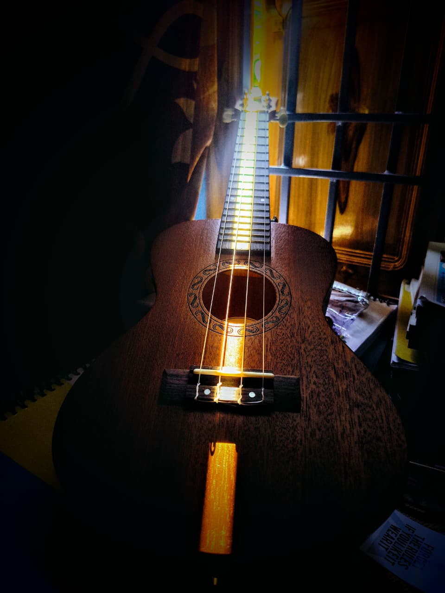

Roots & Language
From Patna to Paris (via JNU)
Carrying my roots from Bihar to New Delhi while immersing myself in French language, phonetics, and global perspectives at JNU.
Exploring French language and culture, digital business, while finding joy in books and singing.


I hail from Hajipur, Bihar—a city rich in history, warmth, and cultural heritage—and I am currently based in New Delhi. Growing up, I was always fascinated by how stories, languages, and technology bring people together across different corners of the world.
That curiosity led me to pursue a multidisciplinary academic life. Today, I study French at Jawaharlal Nehru University (JNU), explore digital entrepreneurship and web development through IIM Bangalore.
Beyond lectures and coding assignments, I am an avid reader who loves getting lost in a good book, and I enjoy singing whenever I want to unwind and express myself creatively.
Carrying my roots from Bihar to New Delhi while immersing myself in French language, phonetics, and global perspectives at JNU.
Whether it is fiction, philosophy, or biographies, reading books keeps my imagination sharp and broadens how I think about the world.

Music is my favorite creative escape. Singing helps me recharge after busy days of studying digital business and languages.